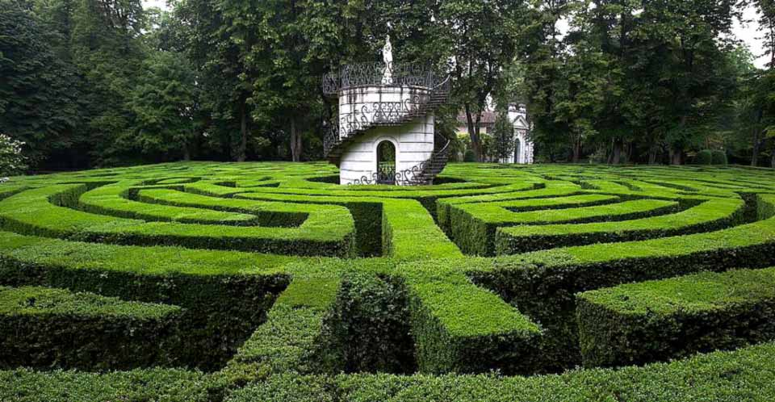

Krajobrazy Rilkego
Villa Pisani w Strà
Niedługi czas potem udałam się wraz z Rilkem do ukochanej przez nas Wenecji. Znów nastał piękny, pogodny dzień.
Po drodze zatrzymaliśmy się w Udine, by w tamtejszym pałacu arcybiskupim zobaczyć freski Tiepola… Następnie ruszyliśmy do Castelfranco, gdzie z rewerencją pozdrowiliśmy Madonnę Giorgione. Czas ostatniego dłuższego postoju poświęciliśmy na zwiedzanie ogrodów w Strà, gdzie w labiryncie zbłądziła ongiś Duse.
— Marie von Thurn und Taxis w swym Wspomnieniu o Rainerze Marii Rilkem
Przywołany przez księżną Taxis labirynt w ogrodach Villa Pisani w Strà, założony w latach 1720-1721; w jego centrum wznosi się wieżyczka, na której tarasie znajduje się posąg Minerwy będącej uosobieniem mądrości.